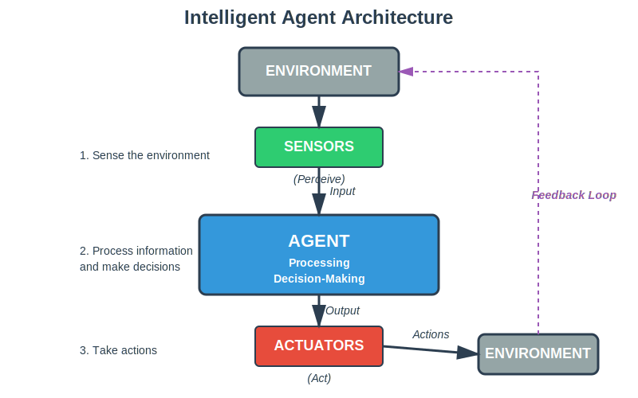

By the end of this session, students will be able to:
Define Artificial Intelligence and explain different perspectives on what AI means
Identify real-world applications of AI in everyday life
Understand the basic concept of an intelligent agent
Recognize major milestones in AI history
Name the main areas of AI research and application
Part 1: AI is Already Part of Your Life
Key Message: You're already using artificial intelligence multiple times every day, often without realizing it.
Consider these everyday activities:
Using a GPS or map app to navigate
Asking Siri, Alexa, or Google Assistant a question
Watching Netflix or scrolling through TikTok recommendations
Using photo apps that automatically recognize faces
All of these are AI applications that have become seamlessly integrated into our daily lives.
GPS NavigationVoice AssistantsContent RecommendationsAI ChatbotsFace RecognitionAI Art GenerationSelf-Driving Cars
Examples of AI in Action:
Voice assistants responding to questions
Face recognition in photos
Autonomous car technology
AI art generation (Midjourney, DALL-E)
Part 2: Defining Artificial Intelligence
What is Intelligence?
Before we define artificial intelligence, let's think about what intelligence means:
The ability to learn from experience
The ability to solve problems
The ability to understand complex ideas
The ability to adapt to new situations
The ability to reason and plan
Artificial Intelligence is about creating machines (computers, robots, software) that can do these things.
Four Perspectives on AI
There are different ways to think about what AI should do:
Four Perspectives on AI
(Russell & Norvig Framework)
Thinking
Acting
Human
Rational
Thinking Humanly
Cognitive Science
Example: Modeling how the human brain recognizes faces, then making AI do it the same way
Understanding human cognition
Thinking Rationally
Logic & Reasoning
Example: Medical diagnosis system using logical rules: "IF fever AND cough THEN check for flu"
Laws of thought
Acting Humanly
The Turing Test
Example: A chatbot that converses so naturally you can't tell if it's human or machine
Behaving like humans
Acting Rationally
Rational Agents
Example: Chess AI that plays to win, choosing moves that maximize winning chances
★ Modern AI Focus ★
Achieving goals effectively
The modern approach focuses on building rational agents that achieve their goals effectively
1. Acting Like Humans
Making machines that behave like humans
Example: A chatbot that can hold a conversation
Example: A robot that can walk and move like a person
The Turing Test: If you chat with something and can't tell if it's human or machine, it passes the test
2. Thinking Like Humans
Making machines that think the way humans think
Understanding how the human brain works
Trying to make computers solve problems the same way
Example: Modeling how humans recognize faces, then making AI do it the same way
3. Thinking Rationally
Making machines that think logically and correctly
Using formal logic and rules
Making sure the reasoning is sound
Example: A medical diagnosis system that uses logical rules: "IF patient has fever AND cough THEN check for flu"
4. Acting Rationally
Making machines that do the right thing to achieve their goals
This is the most common modern approach
Not necessarily thinking like humans, just getting good results
Example: A chess program that plays to win, even if it doesn't think like a human chess player
Simple Definition for Our Course
Artificial Intelligence is the science and engineering of making machines that can perceive their environment, learn from experience, and take actions to achieve goals.
Part 3: What Can AI Do Today?
The State of the Art: Real-World Applications
1. Language and Communication
Speech Recognition
Voice assistants (Siri, Alexa, Google Assistant)
Real-time translation (Google Translate)
Automatic captions on videos
How it works (simple): AI learns patterns in how words sound by listening to thousands of hours of speech
Text Generation
ChatGPT and other conversational AI
Automated email replies
Content writing assistants
How it works (simple): AI learns from billions of text examples to predict what words should come next
Translation
Google Translate can translate between 100+ languages
Real-time conversation translation in apps
Impact: Breaking down language barriers worldwide
2. Vision and Image Recognition
Face Recognition
Unlocking your phone with Face ID
Tagging friends automatically in photos
Security systems
Object Recognition
Medical imaging: detecting tumors in X-rays and MRIs
Quality control in manufacturing
Self-checkout systems that recognize products
Image Generation
AI art tools (DALL-E, Midjourney, Stable Diffusion)
Creating realistic faces of people who don't exist
Helping designers and artists create concepts quickly
3. Autonomous Systems
Self-Driving Cars
Tesla Autopilot, Waymo taxis
Cars that can perceive the road, other vehicles, pedestrians
Make decisions: when to brake, turn, accelerate
Challenge: Still being perfected - safety is critical!
Drones
Package delivery (Amazon Prime Air)
Agricultural monitoring
Search and rescue operations
Robots
Warehouse robots (Amazon fulfillment centers)
Manufacturing robots
Surgical robots assisting doctors
4. Games and Competition
Major Achievements
1997: Deep Blue defeats world chess champion Garry Kasparov
2016: AlphaGo defeats world Go champion Lee Sedol
2019: AI defeats professional players in Dota 2 (complex video game)
Today: AI can play thousands of games at superhuman levels
Why games matter: They're good testing grounds for AI because they have clear rules and goals
5. Recommendation Systems
You experience these daily:
Netflix: "What should I watch next?"
Spotify: "Discover Weekly" playlist
Amazon: "Customers who bought this also bought..."
TikTok/Instagram: Your personalized feed
YouTube: Suggested videos
How they work (simple): AI learns what you like based on your past behavior and finds patterns with similar users
6. Healthcare and Medicine
Diagnosis
AI can detect cancer in medical images with high accuracy
Predicting disease risk based on patient data
Drug discovery: finding new medicines faster
Example: AI detected COVID-19 from chest X-rays during the pandemic
7. Business and Finance
Applications
Fraud detection in credit card transactions
Stock trading algorithms
Customer service chatbots
Predictive analytics for business decisions
8. Creative Applications
Music composition
Writing assistance
Art generation
Video game character behavior
Special effects in movies
What AI Cannot Do Well (Yet)
Important to understand limitations:
Common sense reasoning about everyday situations
Understanding context and nuance like humans
Truly creative thinking (vs. pattern matching)
General intelligence (AI is usually narrow - good at one thing)
Ethical reasoning and moral judgment
Understanding emotions deeply
Part 4: How Did We Get Here? Brief History
History of Artificial Intelligence
Key Milestones 1950-2020s
1950s
Birth of AI
• Turing Test (1950)
• "AI" coined (1956)
• Dartmouth Conf.
• Early optimism
• Checkers programs
1960s-70s
First Challenges
• Limited progress
• Underpowered
computers
• First "AI Winter"
• Reduced funding
1980s
Expert Systems
• MYCIN diagnosis
• IF-THEN rules
• Business interest
• Second AI Winter
(late 80s)
1990s-2000s
ML Takes Off
• Deep Blue (1997)
• Learning from data
• More computing
• Internet data
• Practical apps
2010s
DL Revolution
• ImageNet (2012)
• AlphaGo (2016)
• Self-driving cars
• Voice assistants
• AI mainstream
2020s
Current Era
• GPT-3 (2020)
• ChatGPT (2022)
• AI art tools
• Ethics concerns
• Rapid progress
Pattern: Excitement → Disappointment → New Approach → Progress
Each "winter" taught lessons that led to the next breakthrough
Better technology + More data + New methods = Success
Original educational diagram, CC BY 4.0
1950s: The Birth of AI
1950: Alan Turing asks "Can machines think?" - proposes the Turing Test
1956: The term "Artificial Intelligence" is coined at Dartmouth Conference
Early excitement: Researchers believed human-level AI was 20 years away
Early achievements: Programs that could play checkers, solve algebra problems
1960s-1970s: Early Enthusiasm and First Challenges
Success with specific problems
But... reality set in: problems were harder than expected
Computers weren't powerful enough yet
First "AI Winter" (1970s): Reduced funding and interest when AI didn't deliver on promises
1980s: Expert Systems
AI that captured human expert knowledge in specific domains
Example: MYCIN - diagnosed bacterial infections
Used "IF-THEN" rules
Businesses started investing in AI again
But... another AI winter in late 1980s when systems were hard to maintain
1990s-2000s: Machine Learning Takes Off
Shift from hand-coding rules to letting machines learn from data
1997: Deep Blue beats chess champion
More powerful computers
Internet provides massive amounts of data
Focus on practical applications
2010s: The Deep Learning Revolution
2012: Deep learning breakthrough in image recognition
2016: AlphaGo defeats Go champion
Explosion in applications: voice assistants, autonomous cars, etc.
AI becomes mainstream
2020s: The Current Era
2020: GPT-3 shows impressive language abilities
2022: ChatGPT launched - AI enters public consciousness
AI art tools become popular
Concerns about ethics, bias, job displacement
Race to develop more powerful AI
Key Pattern to Notice
AI has gone through cycles:
Excitement → Build cool things
Disappointment → Harder than we thought
New approach → Learn from failures
Progress → Better technology + more data + new methods
Each "winter" taught us lessons that led to the next breakthrough.
Part 5: The Core Concept - Intelligent Agents
What is an Agent?
An agent is something that:
Perceives its environment (gathers information through sensors)
Processes that information (thinks, reasons, decides)
Acts on the environment (takes actions through actuators)
Has a goal (trying to achieve something)

Intelligent Agent Architecture: The Perception-Action Cycle
Original educational diagram, CC BY 4.0
Everyday Examples
Example 1: A Thermostat (Simple Agent)
Perceives: Temperature sensor reads the room temperature
Goal: Keep room at 22°C (72°F)
Acts: Turns heating on or off
Very simple agent: Just follows basic rules
Example 2: A Robot Vacuum (More Complex Agent)
Perceives:
Sensors detect walls, furniture, dirt
Camera might map the room
Goal: Clean the floor efficiently
Acts:
Moves around
Adjusts suction
Returns to charging station when battery low
More intelligent: Learns the room layout, plans efficient paths
Example 3: Self-Driving Car (Complex Agent)
Perceives:
Cameras see the road, signs, other vehicles, pedestrians
Radar and lidar measure distances
GPS provides location
Goal: Transport passengers safely to destination
Acts:
Steers, accelerates, brakes
Signals turns
Parks
Highly intelligent: Must handle unpredictable situations, make split-second decisions
Example 4: Recommendation System (Virtual Agent)
Perceives:
What you've watched/bought/clicked
What similar users liked
Time of day, device you're using
Goal: Show you content you'll engage with
Acts:
Recommends videos, products, songs
Adjusts the order of your feed
Learns continuously: Gets better as it gathers more data